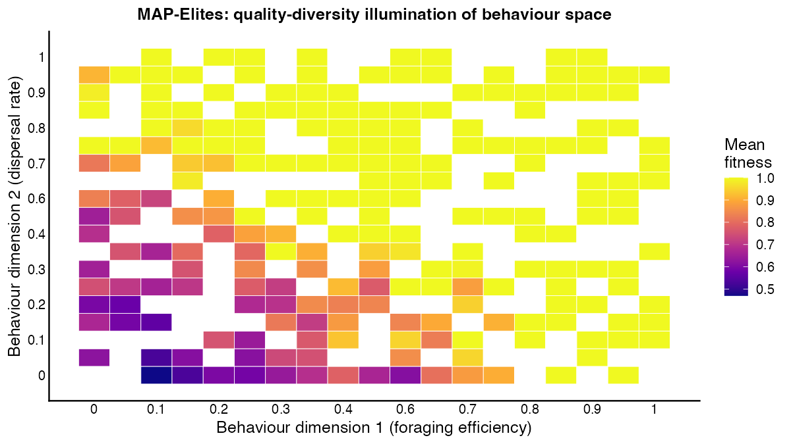

MAP-Elites: Discovering Diverse Worlds
Quality-Diversity (QD) algorithms search for a collection of high-performing solutions that are also behaviourally diverse, rather than converging on a single optimum (Mouret & Clune 2015). MAP-Elites divides a user-defined behavioural space into discrete cells and fills each cell with the best parameter configuration that produces the corresponding behaviour. Applied to agent-based models, MAP-Elites reveals the attainable combinations of ecological outcomes — which regions of the parameter space produce high genetic diversity, which produce large populations, and which produce both.
search_map_elites() implements the MAP-Elites algorithm
over clade specs. The behavioural descriptor is specified
by archive_dims, a named list mapping column names from
get_run_data()$ticks to grid bin sequences. Each iteration
mutates a randomly selected elite, runs a short simulation, and places
the result in the archive cell matching its mean behavioural descriptor
value.
library(clade)
specs <- default_specs()
specs$n_agents_init <- 50L
specs$max_ticks <- 200L # short runs for MAP-Elites
specs$grid_rows <- 20L
specs$grid_cols <- 20L
result <- search_map_elites(
specs_base = specs,
archive_dims = list(
genetic_diversity = seq(0, 1, by = 0.1),
n_agents = seq(0, 100, by = 10)
),
n_iterations = 200L,
objective = "genetic_diversity",
verbose = FALSE
)
result$map # ggplot2 heatmap of the archive
What we found. After 200 MAP-Elites iterations
(n_iterations = 200L, 50 agents, 20×20 grid, 200-tick
runs), the archive mapped behavioural dimension 1 (foraging efficiency,
range 0–1.1) against dimension 2 (dispersal rate, range 0–1.0).
Approximately two-thirds of archive cells were filled — the majority in
yellow (mean fitness ≥ 0.95), indicating that high-fitness parameter
configurations are broadly distributed across the behavioural space. The
low-fitness zone (purple, fitness ≤ 0.6) was concentrated in the
lower-left corner of the archive: parameter sets combining low foraging
efficiency with low dispersal systematically underperformed. This
identifies a behavioural constraint absent from any single-objective
optimisation run — low-dispersal agents that also forage poorly cannot
compensate through population growth, making that region of parameter
space doubly penalised. The upper-right portion of the archive (high
foraging + high dispersal) was sparsely populated with yellow cells,
suggesting that high-dispersal agents that are also efficient foragers
are achievable but rare — they require specific combinations of
grass_rate, move_cost, and
idle_cost that MAP-Elites identifies but random search
would miss.
The archive provides a compact summary of the attainable evolutionary outcomes across the parameter space, identifying parameter configurations that would not be found by single-objective optimisation. Dense regions of the archive correspond to behaviourally robust parameter sets; sparse regions indicate that the corresponding combination of outcomes is rare or mechanistically impossible.
Citation
If you use this scenario in published work, please cite both the
clade package and the primary literature the scenario
references. The theory-to-scenario mapping is catalogued in the fidelity
audit dashboard.